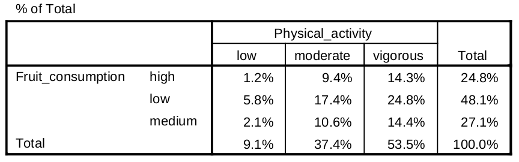
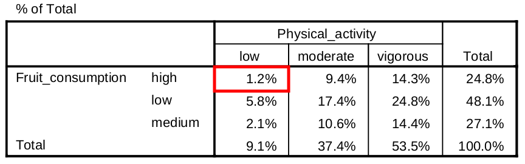
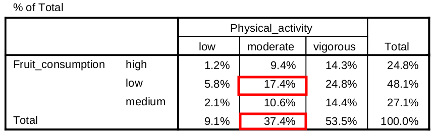
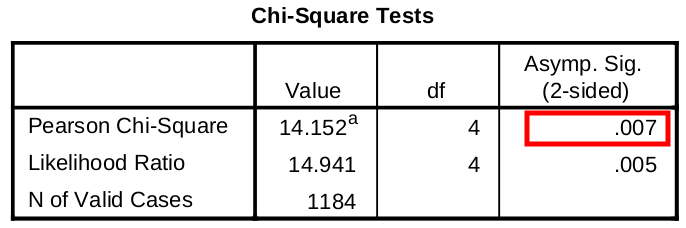

STAT 301 Lab
Lab 12: Analysis of Two-Way Tables
T.A.: Yixuan Qiu
Two-Way Table
- Studies the association between two categorical variables

Percentage Table
- Divide each cell by the total count 
Joint, Marginal, Conditional
- Joint: percentage of a combination of the two factors (look for the key word "and")
- Marginal: percentage of a single factor
- Conditional: percentage of a single factor given that we know the value of the other factor
Example
- What percentage of students have low physical activity and high fruit consumption? (Joint) 
Example
- What percentage of students have moderate physical activity? (Marginal)

Example
- What percentage of students have low fruit consumption within the group of moderate physical activity? (Conditional)
- 17.4% / 37.4% = 46.5% 
The Chi-square Test
- Test whether the two factors have association 
Condition to Use Chi-square Test
For tables larger than 2x2
- The average of the expected counts is 5 or more and the smallest expected count is 1 or more
For 2x2 tables
- All 4 expected cell counts are 5 or more
Enter Data in SPSS
- Remember to do the WEIGHT CASES

Last Words
- Thanks for your hard work in this lab
- You are all GREAT!